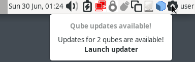

How to update
备注
This page is about updating your system while staying on the same supported version of Qubes OS. If you’re instead looking to upgrade from your current version of Qubes OS to a newer version, see Upgrade guides.
It is important to keep your Qubes OS system up-to-date to ensure you have the latest security updates, as well as the latest non-security enhancements and bug fixes.
Fully updating your Qubes OS system means updating:
standalones (if you have any)
Security updates
Security updates are an extremely important part of keeping your Qubes installation secure. When there is an important security incident, we will issue a Qubes Security Bulletin (QSB) via the Qubes Security Pack (qubes-secpack). It is very important to read each new QSB and follow any user instructions it contains. Most of the time, simply updating your system normally, as described below, will be sufficient to obtain security updates. However, in some cases, special action may be required on your part, which will be explained in the QSB.
Checking for updates
By default, the Qubes Update tool will appear as an icon in the Notification Area when updates are available.

However, you can also start the tool manually by selecting it in the Applications Menu under “Qubes Tools.” Even if no updates have been detected, you can use this tool to check for updates manually at any time by selecting all desired items from the list and clicking “Update”.
备注
For information about how templates download updates, please see Why don’t templates have normal network access? and the Updates proxy .
By default, most qubes that are connected to the internet will periodically check for updates for their parent templates. You can check the date of the last update check in the “last checked” column. If updates are available for any qube, you will receive a notification as described above, and in the “Updates available” column you will see “YES” for that qube(s). If the update check did not find any new updates, “NO” will appear in the column. Respectively, for qubes that are no longer supported, “OBSOLETE” will be displayed. However, if you have any templates that do not have any online child qubes, you will not receive update notifications for them. By default, after a week, if updates for a given qube have not been checked, the value in the “Updates available” column will be set to “MAYBE”.
Installing updates
The standard way to install updates is with the Qubes Update tool. (However, you can also perform the same action via the Command-line interface.)

You can easily decide which qubes to update by clicking on the checkbox in the column header. At startup, only the qubes for which updates are known are selected for updating, but clicking on the mentioned checkbox will also select all qubes with the “MAYBE” status. It is recommended to update all qubes with the statuses “YES” and “MAYBE”.
Then simply follow the on-screen instructions, and the tool will download and install all available updates for you. Note that if you are downloading updates over Tor (sys-whonix), this can take a very long time, especially if there are a lot of updates available.
Restarting after updating
Certain updates require certain components to be restarted in order for the updates to take effect:
QSBs may instruct you to restart certain components after installing updates.
Dom0 should be restarted after all Xen and kernel updates.
On Intel systems, dom0 should be restarted after all
microcode_ctlupdates.On AMD systems, dom0 should be restarted after all
linux-firmwareupdates.After updating a template, first shut down the template, then restart all running qubes based on that template. The updater will try to do this for you automatically in the last step of updating. Remember to save all your data before restarting!
AEM resealing after updating
If you use Anti Evil Maid (AEM), you’ll have to “reseal” after certain updates. It’s common for QSBs to contain instructions to this effect. See the relevant QSB and the AEM README for details.
Command-line interface
危险
Warning: Updating with direct commands such as dnf update and apt update is not recommended, since these bypass built-in Qubes OS update security measures. Instead, we strongly recommend using the Qubes Update tool or its command-line equivalents, as described below. (By contrast, installing packages using direct package manager commands is fine.)
Advanced users may wish to perform updates via the command-line interface. There are two ways to do this:
Use the following two Salt states:
Use
qubes-dom0-updateto update dom0, and usequbes-vm-updateto update domUs:
To check for dom0 updates and apply them, in a dom0 terminal:
# qubes-dom0-updateOr add arguments to tweak the default behaviour. Refer to
qubes-dom0-update --help,man qubes-dom0-updateor manpage on github (make sure to read the appropriate version).To update all updatable templates, in a dom0 terminal:
$ qubes-vm-update -TOr use a different set of arguments. Refer to
qubes-vm-update --help,man qubes-vm-updateor manpage on github (make sure to read the appropriate version).
Using either of these methods has the same effect as updating via the Qubes Update tool.
Advanced users may also be interested in learning how to enable the testing repos.
Upgrading to avoid EOL
The above covers updating within a given operating system (OS) release. Eventually, however, most OS releases will reach end-of-life (EOL), after which point they will no longer be supported. This applies to Qubes OS itself as well as OSes used in templates (and standalones, if you have any).
It’s very important that you use only supported releases so that you continue to receive security updates. This means that you must periodically upgrade Qubes OS and your templates before they reach EOL. You can always see which versions of Qubes OS and select templates are supported on Supported releases.
In the case of Qubes OS itself, we will make an announcement when a supported Qubes OS release is approaching EOL and another when it has actually reached EOL, and we will provide instructions for upgrading to the next stable supported Qubes OS release.
Periodic upgrades are also important for templates. For example, you might be using a Fedora template. The Fedora Project is independent of the Qubes OS Project. They set their own schedule for when each Fedora release reaches EOL. You can always find out when an OS reaches EOL from the upstream project that maintains it. We also pass along any EOL notices we receive for official template OSes as a convenience to Qubes users (see the supported template releases).
The one exception to all this is the specific release used for dom0 (not to be confused with Qubes OS as a whole), which doesn’t have to be upgraded.
Microcode Updates
x86_64 CPUs contain special low-level software called microcode, which is used to implement certain instructions and runs on various processors that are outside of Qubes OS’s control. Most microcode is in an on-CPU ROM, but CPU vendors provide patches that modify small parts of this microcode. These patches can be loaded from the BIOS or by the OS.
The fixes for some QSBs require a microcode update to work. Furthermore, microcode updates will sometimes fix vulnerabilities “silently”. This means that the vulnerability impacts the security of Qubes OS, but the Qubes OS Security Team is not informed that a vulnerability exists, so no QSB is ever issued. Therefore, it is critical to update microcode.
Intel provides microcode updates for all of their CPUs in a public Git repository, and allows OS vendors (such as Qubes OS) to distribute the updates free of charge. AMD, however, only provides microcode for server CPUs. AMD client CPUs can only receive microcode updates via a system firmware update. Worse, there is often a significant delay between when a vulnerability becomes public and when firmware that includes updated microcode is available to Qubes OS users. This is why Qubes OS recommends Intel CPUs instead of AMD CPUs.
Firmware updates
Modern computers have many processors other than those that run Qubes OS. Furthermore, the main processor cores also run firmware, which is used to boot the system and often provides some services at runtime. Both kinds of firmware can have bugs and vulnerabilities, so it is critical to keep them updated.
Some firmware is loaded by the OS at runtime. Such firmware is provided by the linux-firmware package and can be updated the usual way. Other devices have persistent firmware that must be updated manually.
Qubes OS supports updating system firmware in three different ways. Which one to use depends on the device whose firmware is being updated.
If a device is attached to a domU, it should be updated using fwupd. fwupd is included in both Debian and Fedora repositories. It requires Internet access to use, but you can use the updates proxy if you need to update firmware from an offline VM. You can use either the command-line
fwupdmgrtool or any of the graphical interfaces to fwupd.If a device is attached to dom0, use the
qubes-fwupdmgrcommand-line tool. This tool uses fwupd internally, but it fetches firmware and metadata over qrexec from the dom0 UpdateVM, rather than fetching them from the Internet. Unfortunately, their is no graphical interface for this tool yet.System76 systems use a special update tool which is simpler than fwupd. Support for this tool is currently in progress. Once it is finished, users will be able to use the system76-firmware-cli command-line tool to update the firmware.
Firmware updates are important on all systems, but they are especially important on AMD client systems. These do not support loading microcode from the OS, so firmware updates are the only way to obtain microcode updates.
Firmware update methods
As of Qubes 4.2, firmware updates can be performed from within Qubes for fwupd-supported computers.
In dom0
First, ensure that your UpdateVM contains the fwupd-qubes-vm package. This package is installed by default for qubes with qubes-vm-recommended packages.
In a dom0 terminal, install the fwupd-qubes-dom0 package:
$ sudo qubes-dom0-update fwupd-qubes-dom0
Once the package is installed:
$ sudo qubes-fwupdmgr get-devices
Examine the terminal output for warnings or errors. You may see the following warning:
WARNING: UEFI capsule updates not available or enabled
If so, adjust your BIOS settings to enable UEFI updates. This setting is sometimes named “Windows UEFI Firmware Update.”
Once resolved, in a dom0 terminal:
$ sudo qubes-fwupdmgr get-devices
$ sudo qubes-fwupdmgr refresh
$ sudo qubes-fwupdmgr update
A numbered list of devices with available updates will be presented. Ensure your computer is plugged in to a stable power source, then type the list number of the device you wish to update. If a reboot is required, you will be prompted at the console to confirm.
Repeat the update process for any additional devices on your computer.
In other qubes
Devices that are attached to non-dom0 qubes can be updated via a graphical tool for fwupd, or via the fwupdmgr commandline tool.
To update the firmware of offline qubes, use the Updates proxy.
Computers without fwupd support
For computers that do not have firmware update support via fwupd, follow the firmware update instructions on the manufacturer’s website. Verify the authenticity of any firmware updates you apply.